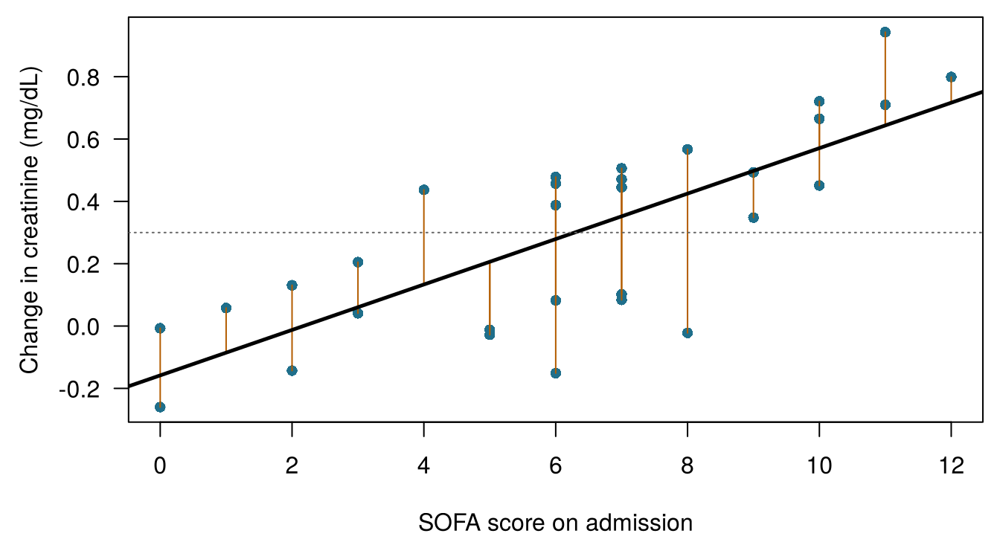
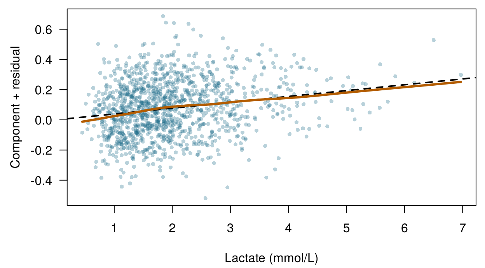
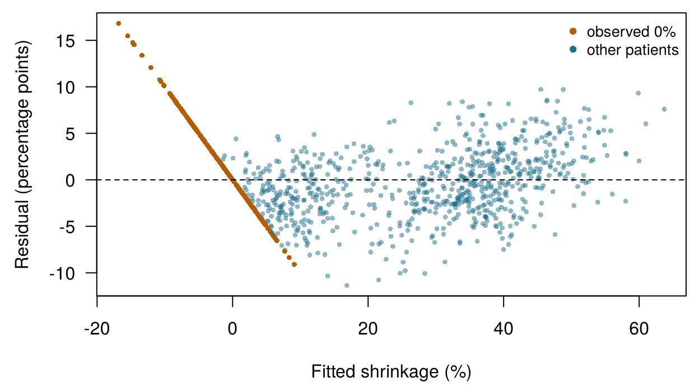

4 Linear models and regularisation
Four questions to warm up. Take your best guess; the chapter explains each one.
| Question | Your answer |
|---|---|
| Emma's line is predicted change = −0.06 + 0.06 × SOFA. What does it predict, in mg/dL, for a patient with SOFA 10? | |
| A patient's creatinine actually rose by 0.50 mg/dL; the line predicted 0.30. What is the difference observed − predicted? | |
| If you add more predictors to a model fitted by least squares, the error on the training data… | |
| Penalising large coefficients so that a model with thousands of genes does not overfit is called… |
How to use this chapter
Starting here?
This chapter borrows a few ideas from earlier chapters. In one line each:
- Model and error. A statistical model writes an outcome as \(y = f(\mathbf{x}) + \varepsilon\): a systematic part \(f\) of the features plus an error \(\varepsilon\); a fitted model is \(\hat f\) and its prediction \(\hat y\) (Section 1.4). Each row is an instance, each column a feature; there are \(n\) instances and \(p\) predictors (Definition 1.7).
- Honest evaluation. Models are fitted on a training set and judged on a test set they have never seen; a model that is too flexible overfits (Section 1.8, Definition 1.8).
- From Chapter 3. The regression metrics MAE and RMSE (average error in the units of the outcome; RMSE punishes large errors more) and \(R^2\) (the share of the outcome’s variance the model explains); \(V\)-fold cross-validation; a hyperparameter is a setting chosen by cross-validation, not fitted directly; leakage is information about the outcome sneaking into the predictors. In ONCO-1, genes 08, 14 and 19 are leaky copies of the outcome and are left out of every model in this chapter.
- From Chapter 2. The normal distribution and the idea of a likelihood.
| Example | Who or what | Outcome | Faces you will meet |
|---|---|---|---|
| 1 Ward 7 ICU | 1 250 ICU patients in 4 hospitals | change in creatinine over 48 h (acute kidney injury if ≥ 0.3 mg/dL) | Aoife (71, sepsis, borderline risk), Tomás (54, low risk), Priya (38, high risk); Dr Emma Walsh; Seán, the pharmacist |
| 2 ONCO-1 trial | 1 000 patients randomised to chemotherapy or not | tumour shrinkage (%) | patients #0042 and #0917 |
| 3 HomeBeat | 500 people wearing a smartwatch at home | stress score, deterioration event | Lena |
| 4 CellWorks | 420 production batches of a cell therapy | potency score | batch CW-118 |
All four datasets are simulated and can be downloaded from the data appendix. The full introduction is in Section 1.1.
This chapter builds the linear model from the ground up and then teaches it restraint. It has ten sections and a Lab, seven quick checks, two “Try it” widgets, a matching challenge and three coding missions in R and Python. Allow about 100 minutes. The mathematics is introduced one line at a time; if a formula looks dense, read the sentence after it, which always says the same thing in words.
Notation at a glance (for lookup only)
| Symbol | Meaning | Section |
|---|---|---|
| \(\beta_0\), \(\beta_j\) | intercept and coefficient of predictor \(j\) | Section 4.1 |
| \(\hat\beta_j\) | estimated coefficient (“hat” = estimated from data) | Section 4.1 |
| \(e_i = y_i - \hat y_i\) | residual of instance \(i\) | Section 4.1 |
| RSS | residual sum of squares, \(\sum_i e_i^2\) | Section 4.1 |
| \(\mathbf{X}\), \(\mathbf{\beta}\) | design matrix (\(n\) rows, one column per coefficient) and coefficient vector | Section 4.2 |
| \(h_{ii}\) | leverage of instance \(i\) | Section 4.5 |
| \(D_i\) | Cook’s distance of instance \(i\) | Section 4.5 |
| \(\lambda\) | penalty strength (a hyperparameter) | Section 4.7 |
| \(\alpha\) | elastic-net mixing parameter, from 0 (ridge) to 1 (lasso) | Section 4.7 |
The full list is on the notation page.
4.1 From one line to least squares
In Chapter 1 you moved two sliders until your line through the Ward 7 data had a small error. A computer does the same thing, but it needs a precise rule for “small”. The rule used by the linear model is two centuries old (Stigler 1981) and still the default in every statistics package.
For one predictor \(x\) (say SOFA) and an outcome \(y\) (the change in creatinine), the simple linear regression model is
\[ y_i = \beta_0 + \beta_1 x_i + \varepsilon_i , \qquad i = 1, \dots, n , \qquad(4.1)\]
where \(\beta_0\) (beta-zero) is the intercept, the predicted outcome when \(x = 0\), and \(\beta_1\) is the slope, the change in the predicted outcome for each one-unit increase in \(x\). Once the coefficients are estimated from data they get hats, and the prediction for patient \(i\) is \(\hat y_i = \hat\beta_0 + \hat\beta_1 x_i\).
Definition 4.1 (Linear regression) A linear regression model writes the outcome as an intercept plus a weighted sum of predictors plus an error: \(y = \beta_0 + \beta_1 x_1 + \dots + \beta_p x_p + \varepsilon\). The weights \(\beta_j\) are the coefficients. “Linear” refers to the coefficients, not to the predictors: a model containing \(x^2\) or \(\log x\) is still linear, because each coefficient multiplies something known and the terms are added up.
How should the computer choose \(\beta_0\) and \(\beta_1\)? For any candidate line, each patient has a residual, the vertical distance between what happened and what the line predicts (Figure 4.1). Least squares picks the line whose residuals are, in a precise sense, as small as possible.
Definition 4.2 (Residual and least squares) The residual of instance \(i\) is \(e_i = y_i - \hat y_i\), observed minus predicted. The residual sum of squares is \(\text{RSS} = \sum_{i=1}^n e_i^2\). Ordinary least squares (OLS) estimates the coefficients as the values that make RSS as small as possible.
Why squares, rather than the absolute distances you minimised in Chapter 1? Three reasons. Squares give a smooth criterion with a single minimum that can be found exactly, with a formula, instead of by trial and error. They punish large errors more than small ones, which is often what we want when a large miss is clinically worse. And if the errors follow a normal distribution, the least-squares line is also the maximum-likelihood line (Chapter 2). For a single predictor the formula is short:
\[ \hat\beta_1 = \frac{\sum_{i}(x_i - \bar x)(y_i - \bar y)}{\sum_{i}(x_i - \bar x)^2}, \qquad \hat\beta_0 = \bar y - \hat\beta_1 \bar x , \qquad(4.2)\]
where \(\bar x\) and \(\bar y\) are the averages. In words: the slope measures how \(x\) and \(y\) move together, relative to how much \(x\) varies on its own, and the line always passes through the point of averages \((\bar x, \bar y)\) (James et al. 2021, ch. 3).
On all 1 250 Ward 7 patients, least squares gives \(\hat y = -0.056 + 0.060 \times \text{SOFA}\): each extra SOFA point is associated with a rise in creatinine about 0.06 mg/dL larger. These are the numbers, rounded, that appear in the warm-up questions. Every method in this book runs the learning loop of Chapter 1 (guess, mark, adjust, repeat); for least squares the loop has a shortcut, because Equation 4.2 jumps straight to the best line.
Two analysts fit a line to the same Ward 7 data. Analyst A minimises the sum of the absolute residuals; analyst B minimises the sum of the squared residuals. Which statement is true?
4.2 Many predictors: multiple linear regression
Seán’s question needs more than SOFA. Multiple linear regression uses all the admission measurements at once. For Ward 7, writing each variable with its name in the dataset,
\[ \begin{aligned} &\mathtt{delta\_creatinine\_48h} \\ &\quad = \beta_0 + \beta_1\,\mathtt{ICU\_B} + \beta_2\,\mathtt{ICU\_C} + \beta_3\,\mathtt{ICU\_D} \\ &\quad + \beta_4\,\mathtt{age} + \beta_5\,\mathtt{sofa} + \beta_6\,\mathtt{lactate} \\ &\quad + \beta_7\,\mathtt{map\_min} + \beta_8\,\mathtt{baseline\_creat} \\ &\quad + \beta_9\,\mathtt{protocol\_adherence} + \beta_{10}\,\mathtt{bun} \\ &\quad + \beta_{11}\,\mathtt{crp} + \beta_{12}\,\mathtt{albumin} + \varepsilon . \end{aligned} \qquad(4.3)\]
patient_id is left out (it identifies a row and carries no information about the patient), and so is the outcome itself.
4.2.1 Categories become columns: dummy coding
site is categorical: ICU_A, ICU_B, ICU_C or ICU_D. A coefficient multiplies a number, so the four sites are turned into three 0/1 columns called dummy variables: ICU_B is 1 for patients treated in ICU_B and 0 otherwise, and similarly for ICU_C and ICU_D. ICU_A, which has no column, is the reference level: its patients have 0 in all three columns. The coefficient of ICU_C is then the difference between ICU_C and ICU_A for patients who are alike in everything else. One column fewer than the number of categories is needed, because a fourth column would be predictable from the other three (it would be 1 exactly when they are all 0).
Definition 4.3 (Design matrix and dummy coding) The design matrix \(\mathbf{X}\) has one row per instance and one column per coefficient: a column of 1s for the intercept, one column for each numerical predictor, and \(k-1\) dummy (0/1) columns for a categorical predictor with \(k\) levels, one level serving as the reference. The model becomes \(\mathbf{y} = \mathbf{X}\mathbf{\beta} + \mathbf{\varepsilon}\).
In matrix form the least-squares estimate has a famous closed form, the solution of the so-called normal equations (James et al. 2021, ch. 3; Hastie, Tibshirani, and Friedman 2009, ch. 3):
\[ \hat{\mathbf{\beta}} = (\mathbf{X}^\top\mathbf{X})^{-1}\mathbf{X}^\top\mathbf{y} . \qquad(4.4)\]
You will not need to compute it by hand. Two things are worth knowing about it. First, it exists only if no column of \(\mathbf{X}\) is an exact combination of the others and there are more rows than columns; we come back to this when the columns are 2 000 genes. Second, the same design must be used for training and test data: the same dummy columns, in the same order, with the same reference level. In R, model.matrix() built from the training data’s formula guarantees this; in Python, fix the categories before calling pd.get_dummies() (McKinney 2010). A test patient from a site with no training patients would have no column to go into.
4.2.2 Reading the coefficients
Table 4.1 shows the fitted model. Because Ward 7 is simulated, we can do something that is impossible with real data: put each estimate next to the true value used to generate the data.
| Term | Unit | Estimate | 95% CI | Value in the simulation |
|---|---|---|---|---|
| (Intercept) | — | 0.38 | 0.252 to 0.507 | — |
| siteICU_B | vs ICU_A | 0.00681 | -0.0219 to 0.0355 | 0.03 |
| siteICU_C | vs ICU_A | 0.0741 | 0.0454 to 0.103 | 0.09 |
| siteICU_D | vs ICU_A | 0.134 | 0.105 to 0.163 | 0.13 |
| age | per year | -0.0000761 | -0.000802 to 0.00065 | 0 |
| sofa | per point | 0.0415 | 0.0372 to 0.0458 | 0.04 |
| lactate | per mmol/L | 0.0387 | 0.0279 to 0.0495 | 0.10 × log(lactate + 0.1) |
| map_min | per mmHg | -0.00631 | -0.00731 to -0.0053 | -0.006 |
| baseline_creat | per mg/dL | 0.231 | 0.201 to 0.261 | 0.22 |
| protocol_adherence | per 1.0 (0 → 100%) | -0.292 | -0.351 to -0.234 | -0.28 |
| bun | per mg/dL | 0.0025 | 0.00122 to 0.00378 | 0.0035 |
| crp | per mg/L | 0.00127 | 0.000986 to 0.00155 | 0.0012 |
| albumin | per g/dL | -0.075 | -0.0965 to -0.0534 | -0.08 |
Each coefficient answers the question “how much does the predicted change in creatinine differ between two patients who differ by one unit in this predictor and are alike in all the others?”
Definition 4.4 (Interpreting a coefficient) In a multiple linear regression, \(\beta_j\) is the expected difference in the outcome between two instances that differ by one unit in \(x_j\) and have the same values of all other predictors in the model. Its size depends on the units of \(x_j\); its meaning depends on which other predictors are in the model. It describes an association: it is a causal effect only under additional assumptions.
Read three rows with that sentence in mind.
- Baseline creatinine. Two patients with the same SOFA, lactate, blood pressure and so on, but a baseline creatinine 1 mg/dL apart, are predicted to differ by 0.23 mg/dL in their 48-hour rise (95% confidence interval 0.20 to 0.26). The simulation used 0.22.
- Age. The estimate is -0.00008 per year, essentially zero, as in the simulation. Age matters for kidneys in real life, but here its influence runs through baseline creatinine, which is already in the model.
- Albumin, Seán’s question. Each extra g/dL of albumin is associated with a rise 0.075 mg/dL smaller. Does that mean an albumin infusion would protect Aoife’s kidneys? Not from this model. In Chapter 1 you saw that severity confounds protocol adherence; low albumin is also a marker of severity and inflammation (Soeters, Wolfe, and Shenkin 2019). A coefficient tells you how patients who happen to differ in albumin differ in outcome, not what would happen if you changed albumin (Hernán and Robins 2020). Chapter 13 is devoted to that second question.
Coefficients in different units cannot be compared directly: 0.04 per SOFA point and 0.0013 per mg/L of CRP say nothing about which variable matters more, because a typical patient’s CRP varies by tens of mg/L. If you want to compare them, standardise the predictors first (subtract the mean and divide by the standard deviation), so that each coefficient is “per standard deviation”. We will standardise all predictors before regularising them in Section 4.7.
4.2.3 Tonight’s patients
The fitted model gives a prediction for each of tonight’s patients, with a 95% prediction interval: a range that should contain the outcome of a new patient like this one 95 times out of 100, if the model’s assumptions hold. To be compared with other models, a model must be fitted on the training patients only, so Table 4.2 uses the same formula refitted on the 1 000 training patients of the shared split; the coefficients barely move.
| Patient | Predicted | 95% prediction interval |
|---|---|---|
| Aoife Byrne | 0.30 | -0.06 to 0.66 |
| Tomás Ruiz | -0.15 | -0.51 to 0.21 |
| Priya Nair | 1.19 | 0.83 to 1.56 |
Aoife’s prediction, 0.30 mg/dL, is still close to the AKI threshold of 0.3, and her interval spans both sides of it. The model is more useful for Tomás (Tomás Ruiz, 54, the low-risk patient) and for Priya (Priya Nair, 38, very sick), whose intervals lie entirely on one side of it. A single number hides that difference; Chapter 5 turns predictions into probabilities of AKI, and Chapter 8 makes the uncertainty explicit.
In Table 4.1 the coefficient of siteICU_D is about 0.13. What does it mean?
Fit your first multiple regression. The Ward 7 data are loaded as icu. In R, the code fits a linear model of delta_creatinine_48h on sofa, map_min and baseline_creat with lm(); fill the blank to extract the coefficient of baseline_creat. In Python, fill the blank with numpy’s least-squares solver (Harris et al. 2020). How does the coefficient compare with the value in Table 4.1, which came from a model with more predictors?
lm() (short for linear model) fitted the model; coef() returns its coefficients, named after the predictors. Pick one by writing its name between the quotes.
coef(fit)["baseline_creat"]numpy’s least-squares solver is np.linalg.lstsq.
beta, *_ = np.linalg.lstsq(X, y, rcond=None)4.3 Reading the output: uncertainty, p-values and ANOVA
In R, summary() prints the classic regression report (here abridged to the first rows of the coefficient table).
summary(fit_w7) Estimate Std. Error t value Pr(>|t|)
(Intercept) 0.3796 0.0651 5.8285 0.0000
siteICU_B 0.0068 0.0146 0.4652 0.6419
age -0.0001 0.0004 -0.2057 0.8371
sofa 0.0415 0.0022 18.7489 0.0000
albumin -0.0750 0.0110 -6.8279 0.0000
Residual standard error: 0.181 on 1237 degrees of freedom
Multiple R-squared: 0.641, Adjusted R-squared: 0.638
F-statistic: 184.4 on 12 and 1237 DF, p-value < 2.2e-16Each row gives the estimate, its standard error (how much the estimate would vary from sample to sample), the t value (estimate divided by standard error) and a p-value. Below the table: the residual standard error, about 0.18 mg/dL, is the typical size of a residual; \(R^2 = 0.64\) says the model accounts for about 64% of the variation in the outcome (in the training data, so it is optimistic; Chapter 3); adjusted \(R^2\) applies a small penalty for the number of predictors; and the F test asks whether the predictors, taken together, explain anything at all.
Definition 4.5 (Confidence interval and p-value (brief)) A 95% confidence interval for \(\beta_j\) is a range computed so that, over many repetitions of the study, 95% of such ranges would contain the true value. The p-value for \(\beta_j\) is the probability of an estimate at least as far from zero as the one observed, if the true coefficient were zero and the model’s assumptions held.
A p-value is easy to misread (Wasserstein and Lazar 2016). It is not the probability that the predictor has no effect, and it does not measure how large or important an association is. With 1 250 patients, a tiny association can have a minute p-value; with 30 patients, a large and clinically important one may not. The confidence interval is usually more informative, because it shows both the size of the association and its uncertainty in the outcome’s own units. When a model has thousands of predictors, a few will have small p-values by chance alone; procedures that control the false discovery rate exist for that situation (Benjamini and Hochberg 1995), and regularisation, later in this chapter, offers another route.
4.3.1 ANOVA: the order of the questions matters
An analysis of variance (ANOVA) table splits the variation explained by the model into the contributions of each predictor, with an F test for each. R’s anova() does this sequentially: each predictor is credited with what it explains after the predictors listed before it, and before those listed after it. The order of the formula therefore changes the answer.
On Ward 7 the effect is striking. With age listed second, as in Equation 4.3, the sequential ANOVA gives age a p-value of 0.00014. Testing age last, after all the other predictors, with drop1(fit, test = "F"), gives 0.84. Both are correct answers to different questions. The first asks “does age explain anything, ignoring everything that comes after it in the formula?”, and it does, because older patients have higher baseline creatinine. The second asks “does age add anything once baseline creatinine and the rest are known?”, and it does not. When there is no natural order among the predictors, use the “each term last” tests (drop1() in base R, or Anova() from the car package (Fox and Weisberg 2019)), which match the t tests of the summary table for numerical predictors.
For albumin, the summary table reports \(p < 0.001\). Which interpretation is correct?
4.4 Six assumptions
The numbers in Table 4.1 are trustworthy only if the model is a reasonable representation of the data. Linear regression rests on six assumptions; Figure 4.2 shows what each looks like when it holds and when it fails.

- Linearity. The average outcome changes linearly with each predictor (on the scale used in the model). If the true relationship is curved, the model is systematically wrong in places. Check: residuals against fitted values, or against each predictor, should show no curve. Remedy: transform a predictor (log, square), add a spline, or use a more flexible model (Chapters 6 and 7).
- Independence of errors. The residual of one patient tells you nothing about the residual of another. This fails with repeated measurements of the same patient, with patients clustered in hospitals, or with data collected over time. Consequence: standard errors are too small and p-values too optimistic. Check: plot residuals in time order or by cluster. Remedy: models for clustered or longitudinal data.
- Constant variance (homoscedasticity). The spread of the residuals is the same across the range of fitted values. A funnel shape is heteroscedasticity. Check: residuals or scale–location plot; a formal test exists (Breusch and Pagan 1979). Remedy: transform the outcome, use weighted least squares, or robust (“sandwich”) standard errors (White 1980).
- Normality of errors. The errors follow a normal distribution. This matters for exact p-values and intervals in small samples, and for prediction intervals; it matters little for the estimates themselves or, with large samples, for confidence intervals. Check: a Q–Q plot, where the points should follow the line.
- No (severe) collinearity. Predictors are not too strongly related to one another. With highly correlated predictors the model cannot tell their contributions apart, so individual coefficients become unstable and their standard errors large, even though predictions may remain good. Check: correlations and the variance inflation factor (Section 4.5). Remedy: drop or combine predictors, or regularise (Section 4.7). Collinearity returns in Chapter 10.
- No unduly influential points. No single patient determines the fit. Check: leverage and Cook’s distance (Section 4.5). Remedy: check the record for errors first; never delete a patient simply because they are inconvenient.
Not every assumption matters for every purpose (Table 4.3). Under the first three assumptions, plus no exact collinearity, the least-squares estimates are unbiased and have the smallest variance among linear unbiased estimators, a result known as the Gauss–Markov theorem; normality is the extra assumption behind exact small-sample p-values and intervals (James et al. 2021, ch. 3; Hastie, Tibshirani, and Friedman 2009, ch. 3).
| Assumption | Coefficients and predictions | Standard errors, p-values, confidence intervals | Prediction intervals |
|---|---|---|---|
| Linearity | essential | essential | essential |
| Independence | usually fine | essential | important |
| Constant variance | fine | important | essential |
| Normality | fine | small samples only | important |
| No severe collinearity | predictions fine; single coefficients unstable | important | fine |
| No influential points | important | important | important |
A team builds a linear model on 1 250 patients only to predict the change in creatinine, and will judge it by its error on a separate test set. Which assumption can they worry about least?
4.5 Diagnostics: checking the Ward 7 model
In R, plot() applied to a fitted linear model draws four standard diagnostic plots (Figure 4.3).

Read them one at a time.
- Residuals vs fitted. An even band around zero with a flat trend line: no sign of a curved relationship overall, and no funnel.
- Normal Q–Q. The points follow the diagonal almost perfectly; the normality assumption is reasonable.
- Scale–location. The trend line is nearly flat: the spread of the residuals is about the same for small and large predicted rises.
- Residuals vs leverage. Every patient has low leverage and the largest Cook’s distance is 0.011, far below the contour of 0.5 that R draws when a patient approaches it.
These plots look at the model as a whole and can hide a problem with a single predictor. A component-plus-residual plot shows, for one predictor, its fitted contribution plus the residuals (Fox and Weisberg 2019). For lactate it bends (Figure 4.4): the outcome rises steeply at low lactate and more slowly at high lactate. That is exactly how the data were generated, with \(\log(\text{lactate})\). Replacing lactate by log(lactate) raises adjusted \(R^2\) only from 0.638 to 0.638: a real but small improvement, which is typical.

4.5.1 Leverage, outliers and influence
Not all unusual patients are a problem, and the three words used for them mean different things.
Definition 4.6 (Leverage, outlier and Cook’s distance) An instance has high leverage \(h_{ii}\) when its predictor values are far from those of the other instances: it could pull the line strongly. An outlier is an instance with a large residual: the model fits it badly. An instance is influential when removing it would change the fitted coefficients noticeably. Cook’s distance \(D_i\) combines the two ingredients, \[ D_i = \frac{e_i^2}{(p+1)\,s^2}\cdot\frac{h_{ii}}{(1-h_{ii})^2}, \] where \(s^2\) is the residual variance and \(p+1\) the number of coefficients (Cook 1977).
A patient with high leverage who lies on the line is harmless; an outlier with average predictor values moves the line only a little; the combination of the two is what makes a point influential (Belsley, Kuh, and Welsch 1980). Common rules of thumb flag leverage above \(2(p+1)/n\) and Cook’s distance above \(4/n\) for a closer look, and treat \(D_i > 1\) as a serious warning (Fox and Weisberg 2019). They are flags, not verdicts: the right response is to check the record (a typing error in a laboratory value?) and to report whether conclusions change without the patient, not to delete it quietly. On Ward 7, 63 patients pass the \(4/n\) flag, as you would expect by chance in 1 250, and none comes anywhere near 1.
For collinearity, the variance inflation factor of predictor \(j\) is \(\text{VIF}_j = 1/(1-R_j^2)\), where \(R_j^2\) is the \(R^2\) of a regression of \(x_j\) on all the other predictors. It says how many times larger the variance of \(\hat\beta_j\) is than it would be if \(x_j\) were unrelated to the other predictors; values above 5 or 10 are usually taken as a sign of trouble (James et al. 2021, ch. 3). On Ward 7 the largest VIF is 1.71, for sofa: no concern.
Drag a patient. The dots are 30 Ward 7 patients. The red patient can be dragged anywhere. The solid line is the least-squares fit with the red patient, the dashed line without. Watch the leverage, the standardised residual and Cook’s distance. Use the buttons for three classic cases. Target: make the red patient influential, with Cook’s distance above 1.
Three lessons from the widget. A patient with a large residual near the middle of the SOFA range barely tilts the line, because there are many neighbours to hold it in place. A patient with an extreme SOFA who agrees with the others changes nothing. Only the combination, extreme and disagreeing, drags the line, and then it can reverse the conclusion of a small study. In real data such a point is often a recording error, or a patient unlike everyone else, for whom the model should not be trusted in any case.
A dataset of 200 ICU patients includes one 19-year-old; everyone else is over 45. Her outcome is almost exactly what the fitted line predicts. Which description fits her?
Hunt for influential patients. Fit the Ward 7 model with the eight numerical predictors and count how many patients have a Cook’s distance above the \(4/n\) flag.
The flag is \(4/n\): put 4 in the blank.
sum(cd > 4 / nrow(icu))The flag is \(4/n\): put 4 in the blank.
int((cooks > 4 / len(y)).sum())4.5.2 Which assumption fails?
Diagnostic plots are a skill of the eye, and the eye improves with practice. The six panels in Figure 4.5 come from six different models, each with one problem.
![Panel A: a normal Q–Q plot whose points curve upwards above the line at the right end. Panel B: residuals against fitted values spreading out like a funnel. Panel C: residuals against leverage with one point at very high leverage and a large negative residual, beyond the Cook's distance contour of 1. Panel D: residuals against fitted values forming a U shape. Panel E: residuals plotted against day of admission, wandering above zero for weeks and then below zero. Panel F: body weight plotted against body-mass index, lying almost on a straight line.](ch04_files/figure-html/fig-ch04-which-1.png)
Match each panel of Figure 4.5 to the assumption that fails.
- Panel A: Q–Q plot of the residuals of a model for hospital costs. Normality
- Panel B: residuals of a model for length of stay. Constant variance
- Panel C: residuals against leverage for a small dose-finding study. No influential points
- Panel D: residuals of a model for blood glucose against age. Linearity
- Panel E: residuals of a ward-level model, plotted by day of admission over five months. Independence
- Panel F: two predictors in the same model. No collinearity
4.6 When predictors crowd in: ONCO-1
Now turn to the ONCO-1 trial. The trial randomised patients with solid tumours to chemotherapy or no chemotherapy and measured, for each, tumour shrinkage (response_percent), a few clinical variables and the expression of 2 000 genes. The browser version of the data has 1 000 patients and the first 50 genes. Written with the names in the dataset, the linear model for the full trial is
\[ \begin{aligned} &\mathtt{response\_percent} \\ &\quad = \beta_0 + \beta_1\,\mathtt{treatment\_chemo} + \beta_2\,\mathtt{dose\_intensity} \\ &\quad + \beta_3\,\mathtt{patient\_age} + \beta_4\,\mathtt{tumor\_grade\_G2} \\ &\quad + \beta_5\,\mathtt{tumor\_grade\_G3} + \beta_6\,\mathtt{performance\_score} \\ &\quad + \beta_7\,\mathtt{gene\_01} + \beta_8\,\mathtt{gene\_02} + \dots + \beta_{2006}\,\mathtt{gene\_2000} + \varepsilon . \end{aligned} \qquad(4.5)\]
Four kinds of columns stay out: patient_id (an identifier), high_response (the outcome in yes/no form), baseline_tumor_mm and post_tumor_mm (from which the outcome is calculated), and genes 08, 14 and 19 (noisy copies of the outcome, the leakage you met in Chapter 3). In the browser data that leaves 53 predictors: six clinical columns and 47 genes.
Three features of this problem push ordinary least squares to its limits.
Too many columns. In the full trial, \(p = 2\,006\) coefficients. Whenever \(p\) is at least \(n\), Equation 4.4 has no unique solution: infinitely many coefficient vectors fit the training data perfectly, with zero residuals, and they disagree wildly about new patients. Even when \(p\) is somewhat smaller than \(n\), OLS uses every column to chase noise (Hastie, Tibshirani, and Friedman 2009, ch. 18).
Correlated columns. Genes are co-expressed. In ONCO-1, gene_01 and gene_12 have a correlation of -0.84, because both follow the same underlying biological programme. Treatment and dose are even more entangled: dose intensity is zero for every no_chemo patient and between 0.8 and 1.1 for every chemo patient, so the two columns carry almost the same information. Their VIFs in the OLS fit are 67 and 67. The model can predict well and still be unable to say how to split the credit between them (Belsley, Kuh, and Welsch 1980).
Marginal and adjusted associations differ. On its own, gene_01 is almost unrelated to shrinkage (correlation 0.03). Yet in the simulation it is one of the three genes that truly affect the response. Its effect is masked because it moves together with gene_12, whose effect it offsets in the raw correlation. Only a model that includes both, adjusting for each, can uncover them; screening genes one at a time would miss gene_01 completely.
There is also a warning sign in the outcome itself: 25% of patients have a shrinkage of exactly 0%, because a tumour that grows is recorded as 0 (Figure 4.6). No straight line respects that floor; the residuals of these patients line up in a diagonal streak, a clear failure of linearity and constant variance at the bottom of the range. We keep the linear model here because it is the subject of the chapter; Chapter 5 models the yes/no version of the outcome, and Chapter 6 uses trees, which handle such floors naturally.

What does chasing noise cost? Fit OLS to just 80 training patients, with the same 53 predictors, and test it on the 200 test patients of the shared split. Its training RMSE is 2.14 percentage points; on the test patients it is 6.06. The model has memorised its 80 patients. With all 800 training patients the gap is much smaller (3.89 against 4.40). The trouble lies in the ratio of predictors to patients, and it is worst exactly where the biology is most interesting: thousands of genes, hundreds of patients.
4.7 Regularisation: ridge, lasso and elastic net
The remedy is to change what “best” means. Instead of asking only for small residuals, we ask for small residuals and small coefficients, and let a single number set the balance.
Definition 4.7 (Regularisation and penalty strength) Regularisation (or shrinkage) estimates the coefficients by minimising the residual sum of squares plus a penalty that grows with the size of the coefficients: \[ \text{RSS}(\mathbf{\beta}) + \lambda\, P(\mathbf{\beta}). \] The penalty strength \(\lambda \ge 0\) (lambda) is a hyperparameter. With \(\lambda = 0\) we are back to OLS; as \(\lambda\) grows, the coefficients are pulled towards zero. The intercept is not penalised, and the predictors are standardised first so that the penalty treats them all alike.
Standardising matters: without it, a gene measured on a scale ten times larger would need a coefficient ten times smaller for the same effect, and would be penalised less for it. Software such as glmnet standardises internally by default (Friedman, Hastie, and Tibshirani 2010).
4.7.1 Ridge: shrink everything a little
Definition 4.8 (Ridge regression) Ridge regression uses the sum of squared coefficients as the penalty (an L2 penalty) (Hoerl and Kennard 1970): \[ \hat{\mathbf{\beta}}^{\text{ridge}} = \arg\min_{\mathbf{\beta}} \ \sum_{i=1}^{n}\bigl(y_i - \beta_0 - \textstyle\sum_{j} x_{ij}\beta_j\bigr)^2 + \lambda \sum_{j=1}^{p} \beta_j^2 . \]
(“arg min” means “the values of \(\mathbf{\beta}\) that make this expression smallest”.) Ridge shrinks all coefficients towards zero but, except in special cases, sets none of them exactly to zero. It has a closed form, \(\hat{\mathbf{\beta}}^{\text{ridge}} = (\mathbf{X}^\top\mathbf{X} + \lambda\mathbf{I})^{-1}\mathbf{X}^\top\mathbf{y}\) for standardised predictors and a centred outcome, where \(\mathbf{I}\) is the identity matrix. Adding \(\lambda\) to the diagonal makes the matrix invertible even when \(p > n\) or the columns are collinear, which is why ridge was invented. With correlated predictors, ridge tends to share the credit among them rather than give it all to one: gene_01 and gene_12 both stay in, each shrunk.
4.7.2 Lasso: shrink some all the way to zero
Definition 4.9 (Lasso) The lasso (least absolute shrinkage and selection operator) uses the sum of absolute values of the coefficients (an L1 penalty) (Tibshirani 1996): \[ \hat{\mathbf{\beta}}^{\text{lasso}} = \arg\min_{\mathbf{\beta}} \ \sum_{i=1}^{n}\bigl(y_i - \beta_0 - \textstyle\sum_{j} x_{ij}\beta_j\bigr)^2 + \lambda \sum_{j=1}^{p} \lvert\beta_j\rvert . \] Because of the corners of the absolute value, the lasso sets some coefficients exactly to zero: it estimates and selects predictors at the same time.
Figure 4.7 shows why the corners matter. Each penalty can be seen as a budget: the coefficients must stay inside a region, a circle for ridge and a diamond for the lasso, and within that region we look for the smallest RSS, whose contours are ellipses around the OLS estimate. The first contact between an ellipse and a diamond very often happens at a corner, where one coefficient is exactly zero; a circle has no corners (James et al. 2021, ch. 6).
4.7.3 Elastic net: a blend
The lasso has a weakness with groups of correlated predictors: it tends to keep one and drop the others somewhat arbitrarily, and with \(p > n\) it can select at most \(n\) of them. The elastic net mixes the two penalties (Zou and Hastie 2005).
Definition 4.10 (Elastic net and the mixing parameter) The elastic net penalty is \(\lambda\bigl[\alpha \sum_j \lvert\beta_j\rvert + \tfrac{1-\alpha}{2} \sum_j \beta_j^2\bigr]\), where the mixing parameter \(\alpha\) runs from 0 (ridge) to 1 (lasso). Both \(\lambda\) and \(\alpha\) are hyperparameters.
A word on software. glmnet, the R package used here, minimises \(\frac{1}{2n}\text{RSS} + \lambda\bigl[\alpha\sum_j\lvert\beta_j\rvert +
\frac{1-\alpha}{2}\sum_j\beta_j^2\bigr]\) (Friedman, Hastie, and Tibshirani 2010): the RSS is divided by \(2n\), so its \(\lambda\) values are on a different scale from the textbook formulas above, though the idea is identical. scikit-learn (Pedregosa et al. 2011), in Python, uses the same objective but calls the penalty strength alpha and the mixing parameter l1_ratio, so its alpha is our \(\lambda\). Always check which is which.
| Model | Penalty \(P(\mathbf{\beta})\) | Hyperparameters | Sets coefficients to zero? | Typical use |
|---|---|---|---|---|
| OLS | none | none | no | few predictors, \(n \gg p\), coefficients to interpret |
| Ridge | \(\sum_j \beta_j^2\) (L2) | \(\lambda\) | no | many small, correlated effects; stable predictions |
| Lasso | \(\sum_j \lvert\beta_j\rvert\) (L1) | \(\lambda\) | yes | a short list of predictors is wanted |
| Elastic net | \(\alpha\sum_j\lvert\beta_j\rvert + \frac{1-\alpha}{2}\sum_j\beta_j^2\) | \(\lambda\), \(\alpha\) | yes | correlated groups, \(p \gg n\) |
4.7.4 What shrinkage buys: bias for variance
Shrinking coefficients towards zero makes them systematically too small: regularisation adds bias. It never reduces it. What it buys is a reduction in variance: the coefficients, and the predictions, change much less from one training sample to another. When the variance saved is larger than the bias added, the error on new patients falls (Hastie, Tibshirani, and Friedman 2009, ch. 3). That is the bias–variance trade-off of Chapter 1, now with a dial: small \(\lambda\), low bias and high variance; large \(\lambda\), high bias and low variance. It is also why regularised models are recommended for clinical prediction models developed on modest samples, where OLS predictions tend to be too extreme for new patients (Steyerberg 2019; Harrell 2015).
You increase \(\lambda\) in a ridge regression from a very small to a very large value. What happens?
In ONCO-1, gene_01 and gene_12 are strongly correlated and both truly affect shrinkage. What do you expect from ridge and from the lasso?
4.8 Choosing λ: the coefficient path and the 1-SE rule
\(\lambda\) is a hyperparameter, so it is chosen by \(V\)-fold cross-validation on the training data, never on the test set (Chapter 3). The usual recipe has four steps:
- Fit the model for a whole grid of \(\lambda\) values, from one so large that every coefficient is zero down to one so small that the fit is close to OLS. The sequence of fitted coefficients is the coefficient path.
- Estimate the cross-validated error at every \(\lambda\), using the same folds for every \(\lambda\), and for every model you intend to compare.
- Pick \(\lambda\) (and, for the elastic net, \(\alpha\)) by one of the rules below.
- Refit on the whole training set with that \(\lambda\), and evaluate once on the test set.
Definition 4.11 (Coefficient path) The coefficient path shows each coefficient of a regularised model as a function of \(\lambda\). For the lasso, coefficients enter the model one at a time as \(\lambda\) decreases; for ridge, all are non-zero and grow smoothly (James et al. 2021, ch. 6).
Definition 4.12 (λ min and the 1-SE rule) lambda.min is the \(\lambda\) with the smallest cross-validated error. The one-standard-error rule picks instead the largest \(\lambda\) whose cross-validated error is within one standard error of that minimum (lambda.1se): a simpler, more strongly regularised model whose error is statistically indistinguishable from the best (Breiman et al. 1984; Hastie, Tibshirani, and Friedman 2009, ch. 7).
The 1-SE rule reflects a sensible scepticism: the minimum of a noisy cross-validation curve is itself uncertain, so among models that perform about equally well, prefer the simplest. The widget below lets you walk along the paths for ONCO-1.
Walk the λ path. The model predicts tumour shrinkage in ONCO-1 from 53 standardised predictors, using the 800 training patients of the shared split; all numbers were computed in advance with glmnet. Choose a penalty and move along the path from a very strong penalty (left) to a very weak one (right). The top plot shows every coefficient; the middle one the 5-fold cross-validated RMSE with a band of ± one standard error; the bottom one the coefficients that are non-zero at the current \(\lambda\). Target: for the lasso, find the λ chosen by the 1-SE rule: the strongest penalty whose cross-validated error lies below the dashed line.
Things to notice as you walk. With the lasso, the first predictors to enter are treatment, dose and gene_05, the strongest signals. Some genes that have no effect in the simulation, such as gene_27, enter before gene_01 and gene_12: they are correlated with the causal genes and borrow part of their signal. gene_01 and gene_12 enter later, because each is useful mainly once the other is in, and most noise genes enter only when the penalty is already weak. Ridge never sets anything to zero, so its count of non-zero coefficients is always 53. The CV curve is flat over a wide range of \(\lambda\): many models are about equally good, which is why the 1-SE rule can afford to choose a simpler one.
Ridge by hand. For standardised predictors and a centred outcome, ridge has the closed form \((\mathbf{X}^\top\mathbf{X} + \lambda\mathbf{I})^{-1}\mathbf{X}^\top\mathbf{y}\). Compute it for the first seven ONCO-1 genes with \(\lambda = 200\) and compare with OLS. Fill the blank with the penalty strength.
The blank is the penalty strength, already stored in the variable lambda.
b_ridge <- solve(crossprod(X) + lambda * diag(ncol(X)), crossprod(X, y))The blank is the penalty strength, already stored in the variable lam.
b_ridge = np.linalg.solve(X.T @ X + lam * np.eye(p), X.T @ y)4.9 Comparing OLS, ridge, lasso and elastic net
Table 4.5 puts the four models side by side on the same ONCO-1 training and test patients, with \(\lambda\) (and \(\alpha\) for the elastic net, from a grid of 0, 0.1, …, 1) chosen by 5-fold cross-validation on the training set, using the shared folds of the book (the same for every model). The test set was used only for this table.
| Training patients | Model | Train MAE | Train RMSE | Test MAE | Test RMSE | Non-zero | α | λ (glmnet scale) |
|---|---|---|---|---|---|---|---|---|
| n_train = 800 | OLS | 3.05 | 3.89 | 3.47 | 4.40 | 53 | — | — |
| n_train = 800 | Ridge (λ min) | 3.07 | 3.90 | 3.46 | 4.38 | 53 | 0.0 | 0.204 |
| n_train = 800 | Ridge (λ 1-SE) | 3.23 | 4.06 | 3.52 | 4.40 | 53 | 0.0 | 1.25 |
| n_train = 800 | Lasso (λ min) | 3.11 | 3.95 | 3.36 | 4.30 | 28 | 1.0 | 0.0568 |
| n_train = 800 | Lasso (λ 1-SE) | 3.33 | 4.20 | 3.47 | 4.43 | 10 | 1.0 | 0.276 |
| n_train = 800 | Elastic net (λ min) | 3.11 | 3.95 | 3.36 | 4.30 | 27 | 0.8 | 0.071 |
| n_train = 800 | Elastic net (λ 1-SE) | 3.31 | 4.18 | 3.46 | 4.42 | 11 | 0.8 | 0.315 |
| n_train = 80 | OLS | 1.75 | 2.14 | 4.82 | 6.06 | 53 | — | — |
| n_train = 80 | Ridge (λ min) | 2.24 | 2.80 | 4.03 | 5.06 | 53 | 0.0 | 1.26 |
| n_train = 80 | Ridge (λ 1-SE) | 2.61 | 3.26 | 4.04 | 5.06 | 53 | 0.0 | 2.21 |
| n_train = 80 | Lasso (λ min) | 2.44 | 3.13 | 3.82 | 4.95 | 23 | 1.0 | 0.192 |
| n_train = 80 | Lasso (λ 1-SE) | 3.21 | 4.13 | 3.82 | 4.89 | 9 | 1.0 | 0.534 |
| n_train = 80 | Elastic net (λ min) | 2.45 | 3.14 | 3.80 | 4.92 | 24 | 0.9 | 0.213 |
| n_train = 80 | Elastic net (λ 1-SE) | 3.03 | 3.91 | 3.79 | 4.87 | 13 | 0.9 | 0.449 |
Three conclusions.
- With 800 training patients and 53 predictors, the four models predict about equally well. The lasso at λ min has a test RMSE of 4.30 against 4.40 for OLS, using 28 predictors instead of 53. When \(n\) is large relative to \(p\), regularisation buys simplicity more than accuracy.
- With 80 training patients, regularisation is what makes the model usable. OLS reaches a test RMSE of 6.06; ridge 5.06; the lasso 4.95. OLS has the smallest training error of all and the largest test error: overfitting in one line.
- The elastic net chose α = 0.8, close to the lasso, and its rows are almost identical to the lasso rows. The cross-validated error hardly changes for α between 0.3 and 1 (cross-validated RMSE 4.113 at α = 0.3 against 4.108 at the best α), so the exact α matters little here: the blend helps most when correlated groups carry many small effects, and ONCO-1 has a few strong ones.
Patients #0042 and #0917 from the opening are two of the 200 test patients (P5440 and P9541 in onco1.csv). The lasso at λ min predicts 32.1% and 26.3% shrinkage for them, against the observed 36.6% and 20.4%. It puts them in the right order but predicts a gap of about 6 percentage points where the real gap is 16: two patients with the same clinical profile differ in ways that the 53 predictors capture only in part. Chapter 5 returns to them with probabilities.
| Predictor | Role | OLS | Ridge (λ min) | Lasso (λ 1-SE) |
|---|---|---|---|---|
| treatmentchemo | clinical | 9.67 | 8.72 | 9.50 |
| gene_05 | causal gene | -7.95 | -7.66 | -7.39 |
| dose_intensity | clinical | 6.90 | 7.75 | 6.79 |
| gene_01 | causal gene | 3.93 | 3.64 | 1.95 |
| patient_age | clinical | 1.39 | 1.38 | 1.17 |
| gene_12 | causal gene | 3.20 | 2.88 | 1.15 |
| tumor_gradeG3 | clinical | 1.56 | 1.53 | 1.02 |
| performance_score | clinical | -1.25 | -1.23 | -0.93 |
| gene_27 | no effect in the simulation | 0.58 | 0.54 | 0.18 |
| gene_35 | no effect in the simulation | 0.16 | 0.19 | 0.15 |
The lasso with the 1-SE rule keeps 10 of 53 predictors (Table 4.6): 5 of the 6 clinical columns, the three causal genes (01, 05 and 12) and 2 genes with small coefficients that have no effect in the simulation but are correlated with the causal ones. In real data you would not know which is which. A lasso gene list is therefore a set of hypotheses for laboratory follow-up, not a list of discovered causes; it can also change noticeably from one sample to another when genes are correlated (Meinshausen and Bühlmann 2010). Chapters 6 and 12 compare this list with what trees and explanation methods report.
4.9.1 Back to the study questions
The v1 analysis of ONCO-1 set out four questions. Here is what this chapter can and cannot say about each.
- Does chemotherapy shrink tumours more than no chemotherapy? This is a causal question, and ONCO-1 is randomised, so the simplest answer is the best: compare the arms. Average shrinkage was 37.8% with chemotherapy and 4.9% without, a difference of 32.9 percentage points. Do not read the effect off the
treatment_chemocoefficient of the big model: because dose is zero for every untreated patient, the effect of chemotherapy is split between the treatment and dose coefficients, and penalised coefficients are biased towards zero by design. - Are age, grade and performance status associated with shrinkage? OLS with confidence intervals answers this, provided the assumptions of Section 4.4 are checked; the coefficients are adjusted associations.
- Which genes are associated with the response? The lasso narrows 47 genes to a short list, which here contains the three causal genes and a few passengers.
- How well can we predict a patient’s shrinkage? With a test RMSE of about 4 percentage points; whether that is good enough depends on the decision the prediction should support.
Too good to be true
Had we kept genes 08, 14 and 19, every model in Table 4.5 would have looked spectacular, with test errors close to zero, because those columns are noisy copies of the outcome. Penalisation does not protect against leakage (Kapoor and Narayanan 2023); it would have selected the leaky genes first. Check what each predictor is before asking how well it predicts (Chapter 3).
4.9.2 Ward 7: the comparison so far
Regularisation was introduced on ONCO-1, where 53 predictors compete. What does it do on Ward 7, with 1 000 training patients and ten predictors (12 columns once site is dummy coded)? Table 4.7 continues the comparison started in Chapter 3: every model is fitted on the same 1 000 training patients and judged on the same 250 test patients, and every tuning value is chosen on the same five folds. The rows added in this chapter are in bold. They use the ten predictors of Table 4.1 (the set called P10), standardised on the training patients for the penalised fits, with λ chosen by cross-validation and α from the grid 0, 0.1, …, 1, as for ONCO-1.
| Chapter | Model | Predictors | CV MAE | Test MAE | Test RMSE | Test R² |
|---|---|---|---|---|---|---|
| 1 | Training mean (no model) | none | 0.241 | 0.236 | 0.297 | 0.000 |
| 1 | Linear regression on SOFA only | SOFA | 0.196 | 0.191 | 0.237 | 0.363 |
| 3 | Linear regression, two predictors (teaching set) | P2 | 0.176 | 0.171 | 0.213 | 0.485 |
| 3 | kNN regression, k = 15, standardised (teaching set) | P2 | 0.179 | 0.176 | 0.217 | 0.467 |
| 3 | kNN regression, k = 22 by CV, standardised | P10 | 0.172 | 0.168 | 0.206 | 0.517 |
| 4 | Linear regression (OLS) | P10 | 0.147 | 0.141 | 0.174 | 0.656 |
| 4 | Ridge regression (λ min) | P10 | 0.147 | 0.141 | 0.174 | 0.657 |
| 4 | Ridge regression (λ 1-SE) | P10 | 0.151 | 0.143 | 0.175 | 0.651 |
| 4 | Lasso (λ min) | P10 | 0.147 | 0.141 | 0.174 | 0.657 |
| 4 | Lasso (λ 1-SE) | P10 | 0.152 | 0.144 | 0.177 | 0.643 |
| 4 | Elastic net (α = 1.0, λ min) | P10 | 0.147 | 0.141 | 0.174 | 0.657 |
| 4 | Elastic net (α = 1.0, λ 1-SE) | P10 | 0.152 | 0.144 | 0.177 | 0.643 |
The penalised models land within a thousandth of OLS: test MAE 0.141 for OLS, 0.141 for ridge and 0.141 for the lasso at λ min. Cross-validation chose α = 1 for the elastic net, so its rows repeat the lasso’s. The λ 1-SE versions, which shrink harder, are slightly worse (0.143 and 0.144). With many more patients than predictors there is little variance to remove, the lesson of the 800-patient ONCO-1 rows again. The real step forward is the ten predictors themselves: OLS beats every model of Chapter 3, including kNN on the same ten predictors (test MAE 0.168) and the two-predictor line (0.171), and it cuts the error of the training-mean baseline of Chapter 1 (0.236) by about 40%. Chapter 6 adds trees and forests to this table.
4.10 Where this fits in the decision loop
A linear model gives Emma and Seán three kinds of information. A prediction for each patient, best read with its interval: for Aoife it straddles the AKI threshold, which is itself useful, because it says that the model cannot settle her case and clinical judgement, or more frequent creatinine checks, must. Adjusted associations, which tell the team how patients who differ in one respect differ in outcome, and which become claims about what an intervention would do only with the causal reasoning of Chapter 13. And, with the lasso, a short list of candidate predictors, which in ONCO-1 is a list of hypotheses for the laboratory rather than a decision rule.
What can go wrong? A single influential patient can steer a small study (Section 4.5); collinear predictors make individual coefficients unstable; a coefficient can be mistaken for an effect; a p-value can be mistaken for importance; and \(\lambda\) chosen on the test set would make the reported error too optimistic. Who stays in control? The people who decide what the prediction is for, which error matters, and what a coefficient may and may not be used to claim.
4.11 Lab: linear and regularised models
The Lab gathers the chapter’s code in one place. Run it here, or download it and run it on your computer: ch04_lab.R · ch04_lab.py. The R version installs glmnet if it is missing.
Two observations to take forward. On Ward 7 the linear model clearly beats the “average” baseline of Chapter 1, and its prediction for Aoife still sits near the AKI threshold. On ONCO-1 the four models predict similarly with 800 training patients, and the lasso keeps a short list that contains the three causal genes. The R version reproduces the test errors of Table 4.5 exactly. R and Python use the same shared split and folds, but glmnet and scikit-learn differ in their λ grids and conventions, so the Python numbers differ a little. scikit-learn’s LassoCV also has no built-in 1-SE rule: it uses the λ with the smallest cross-validated error, so its lasso keeps more genes, among them the same three causal ones.
4.12 Exercises
- A sentence for Seán. Write one sentence, for a pharmacist, that reports the albumin coefficient of Table 4.1 with its confidence interval and contains no causal language.
- Log lactate. Refit the Ward 7 model with
log(lactate)instead oflactate. Compare the coefficient table, the adjusted \(R^2\) and the component-plus-residual plot. How would you explain the new lactate coefficient? - Change the reference. Make ICU_D the reference site (in R,
relevel(icu$site, ref = "ICU_D")). Which numbers in the coefficient table change? Do the predictions for tonight’s patients change? - Leverage without influence. In the drag widget, find a position with a large standardised residual (above 2) but Cook’s distance below 0.1, and another with leverage above the flag but Cook’s distance below 0.1. Explain both in a sentence each.
- Order in ANOVA. Move
ageto the end of the Ward 7 formula and runanova()again. What happens to its p-value, and why? - The λ path. In the λ widget, at roughly which step does gene_12 enter the lasso? With ridge, is any coefficient ever exactly zero? With the elastic net, are there more or fewer non-zero coefficients than with the lasso at a similar CV error?
- Small samples. Using Table 4.5, explain why OLS with 80 training patients has the smallest training error and the largest test error of all models.
- Treatment and dose. Using the coefficients of an OLS fit of
response_percentontreatmentanddose_intensityonly, compute the predicted difference between an untreated patient and a treated patient with dose intensity 1.0. Compare with the difference in arm means. Why is thetreatmentcoefficient alone not the effect of chemotherapy? - Code. In the Lab, replace
lambda.1sebylambda.minfor the lasso. How many predictors are kept, and how does the test RMSE change?
Selected answers
1. For example: “Among Ward 7 patients who were similar in the other recorded measurements, each additional g/dL of albumin was associated with a 48-hour creatinine rise about 0.07 mg/dL smaller (95% CI 0.05 to 0.10 mg/dL smaller).”
3. The intercept and the three site coefficients change, because they are now comparisons with ICU_D. All other coefficients, the residuals, \(R^2\) and every prediction stay the same: the model is the same, only its parametrisation changes.
5. Placed last, age is tested after baseline creatinine and the other predictors, so its sequential p-value becomes the same as the “each term last” one, about 0.84. Placed early, it was credited with variation it shares with baseline creatinine.
7. With 53 predictors and 80 patients, OLS has enough freedom to follow the noise of its 80 patients closely, so the training error is small; that noise does not repeat in new patients, so the test error is large. Penalties remove some of that freedom: the training error goes up and the test error goes down.
8. In the model response_percent ~ treatment + dose_intensity, the treated-minus-untreated difference at dose 1.0 is \(\hat\beta_{\text{treatment}} + 1.0 \times \hat\beta_{\text{dose}}\), which is close to the difference in arm means. Because dose is 0 for all untreated patients and between 0.8 and 1.1 for all treated ones, the two columns share the effect of chemotherapy, and neither coefficient on its own is the effect.
4.13 Summary
- Least squares chooses the coefficients that minimise the sum of squared residuals; a linear regression is linear in its coefficients, not necessarily in its predictors.
- With several predictors, categorical variables enter through dummy coding in a design matrix; each coefficient is an adjusted association, in the units of its predictor, not a causal effect.
- Confidence intervals convey size and uncertainty; p-values do neither on their own. Sequential ANOVA depends on the order of the predictors.
- Six assumptions (linearity, independence, constant variance, normality, no severe collinearity, no influential points) are checked with diagnostic plots, leverage, Cook’s distance and the VIF; which ones matter depends on the purpose.
- With many or correlated predictors OLS overfits. Regularisation adds a penalty with strength \(\lambda\): ridge (L2) shrinks all coefficients, the lasso (L1) sets some to zero, the elastic net mixes them with \(\alpha\). Penalties add bias and remove variance.
- \(\lambda\) is chosen by cross-validation along the coefficient path, with
lambda.minor the 1-SE rule; the test set is used once, at the end.
Where this chapter is used later
| Idea from this chapter | Where it returns |
|---|---|
| Linear predictor \(\beta_0 + \sum_j \beta_j x_j\), coefficients, dummy coding | Chapter 5 (logistic regression), Chapter 7 (a neuron computes the same weighted sum) |
| Penalised regression, \(\lambda\), 1-SE rule | Chapter 5 (penalised logistic regression), Chapter 6 (pruning trees), Chapter 7 (weight decay) |
| Lasso’s gene list | Chapter 6 (tree importances), Chapter 12 (explanations) |
| Prediction intervals | Chapter 8 (Bayesian regression and posterior predictive) |
| Collinearity, standardisation, \(p \gg n\) | Chapter 10 (high-dimensional data and PCA) |
| A coefficient is an association, not an effect | Chapter 13 (from prediction to causation) |
Next: Emma does not really need Aoife’s predicted creatinine; she needs the probability that Aoife develops AKI. Chapter 5 bends the straight line into a curve that stays between 0 and 1: logistic regression.
References
Belsley, David A., Edwin Kuh, and Roy E. Welsch. 1980. Regression Diagnostics: Identifying Influential Data and Sources of Collinearity. New York: Wiley. https://doi.org/10.1002/0471725153.
Benjamini, Yoav, and Yosef Hochberg. 1995. “Controlling the False Discovery Rate: A Practical and Powerful Approach to Multiple Testing.” Journal of the Royal Statistical Society: Series B (Methodological) 57 (1): 289–300. https://doi.org/10.1111/j.2517-6161.1995.tb02031.x.
Breiman, Leo, Jerome H. Friedman, Richard A. Olshen, and Charles J. Stone. 1984. Classification and Regression Trees. Belmont, CA: Wadsworth.
Breusch, T. S., and A. R. Pagan. 1979. “A Simple Test for Heteroscedasticity and Random Coefficient Variation.” Econometrica 47 (5): 1287–94. https://doi.org/10.2307/1911963.
Cook, R. Dennis. 1977. “Detection of Influential Observation in Linear Regression.” Technometrics 19 (1): 15–18. https://doi.org/10.1080/00401706.1977.10489493.
Fox, John, and Sanford Weisberg. 2019. An R Companion to Applied Regression. 3rd ed. Thousand Oaks, CA: Sage.
Friedman, Jerome, Trevor Hastie, and Robert Tibshirani. 2010. “Regularization Paths for Generalized Linear Models via Coordinate Descent.” Journal of Statistical Software 33 (1): 1–22. https://doi.org/10.18637/jss.v033.i01.
Harrell, Frank E., Jr. 2015. Regression Modeling Strategies: With Applications to Linear Models, Logistic and Ordinal Regression, and Survival Analysis. 2nd ed. Cham: Springer. https://doi.org/10.1007/978-3-319-19425-7.
Harris, Charles R., K. Jarrod Millman, Stéfan J. van der Walt, et al. 2020. “Array Programming with NumPy.” Nature 585 (7825): 357–62. https://doi.org/10.1038/s41586-020-2649-2.
Hastie, Trevor, Robert Tibshirani, and Jerome Friedman. 2009. The Elements of Statistical Learning: Data Mining, Inference, and Prediction. 2nd ed. New York: Springer. https://doi.org/10.1007/978-0-387-84858-7.
Hernán, Miguel A., and James M. Robins. 2020. Causal Inference: What If. Boca Raton: Chapman & Hall/CRC.
Hoerl, Arthur E., and Robert W. Kennard. 1970. “Ridge Regression: Biased Estimation for Nonorthogonal Problems.” Technometrics 12 (1): 55–67. https://doi.org/10.1080/00401706.1970.10488634.
James, Gareth, Daniela Witten, Trevor Hastie, and Robert Tibshirani. 2021. An Introduction to Statistical Learning: With Applications in R. 2nd ed. New York: Springer. https://doi.org/10.1007/978-1-0716-1418-1.
Kapoor, Sayash, and Arvind Narayanan. 2023. “Leakage and the Reproducibility Crisis in Machine-Learning-Based Science.” Patterns 4 (9): 100804. https://doi.org/10.1016/j.patter.2023.100804.
Kidney Disease: Improving Global Outcomes (KDIGO) Acute Kidney Injury Work Group. 2012. “KDIGO Clinical Practice Guideline for Acute Kidney Injury.” Kidney International Supplements 2 (1): 1–138.
McKinney, Wes. 2010. “Data Structures for Statistical Computing in Python.” In Proceedings of the 9th Python in Science Conference, 56–61. https://doi.org/10.25080/Majora-92bf1922-00a.
Meinshausen, Nicolai, and Peter Bühlmann. 2010. “Stability Selection.” Journal of the Royal Statistical Society: Series B (Statistical Methodology) 72 (4): 417–73. https://doi.org/10.1111/j.1467-9868.2010.00740.x.
Pedregosa, Fabian, Gaël Varoquaux, Alexandre Gramfort, Vincent Michel, Bertrand Thirion, Olivier Grisel, Mathieu Blondel, et al. 2011. “Scikit-Learn: Machine Learning in Python.” Journal of Machine Learning Research 12 (85): 2825–30. https://jmlr.org/papers/v12/pedregosa11a.html.
Soeters, Peter B., Robert R. Wolfe, and Alan Shenkin. 2019. “Hypoalbuminemia: Pathogenesis and Clinical Significance.” Journal of Parenteral and Enteral Nutrition 43 (2): 181–93. https://doi.org/10.1002/jpen.1451.
Steyerberg, Ewout W. 2019. Clinical Prediction Models: A Practical Approach to Development, Validation, and Updating. 2nd ed. Cham: Springer. https://doi.org/10.1007/978-3-030-16399-0.
Stigler, Stephen M. 1981. “Gauss and the Invention of Least Squares.” The Annals of Statistics 9 (3): 465–74. https://doi.org/10.1214/aos/1176345451.
Tibshirani, Robert. 1996. “Regression Shrinkage and Selection via the Lasso.” Journal of the Royal Statistical Society: Series B (Methodological) 58 (1): 267–88. https://doi.org/10.1111/j.2517-6161.1996.tb02080.x.
Vincent, Jean-Louis, Rui Moreno, Jukka Takala, Sheila Willatts, Arnaldo De Mendonça, Hajo Bruining, C. K. Reinhart, Peter M. Suter, and L. G. Thijs. 1996. “The SOFA (Sepsis-Related Organ Failure Assessment) Score to Describe Organ Dysfunction/Failure.” Intensive Care Medicine 22 (7): 707–10. https://doi.org/10.1007/BF01709751.
Wasserstein, Ronald L., and Nicole A. Lazar. 2016. “The ASA Statement on p-Values: Context, Process, and Purpose.” The American Statistician 70 (2): 129–33. https://doi.org/10.1080/00031305.2016.1154108.
White, Halbert. 1980. “A Heteroskedasticity-Consistent Covariance Matrix Estimator and a Direct Test for Heteroskedasticity.” Econometrica 48 (4): 817–38. https://doi.org/10.2307/1912934.
Zou, Hui, and Trevor Hastie. 2005. “Regularization and Variable Selection via the Elastic Net.” Journal of the Royal Statistical Society: Series B (Statistical Methodology) 67 (2): 301–20. https://doi.org/10.1111/j.1467-9868.2005.00503.x.